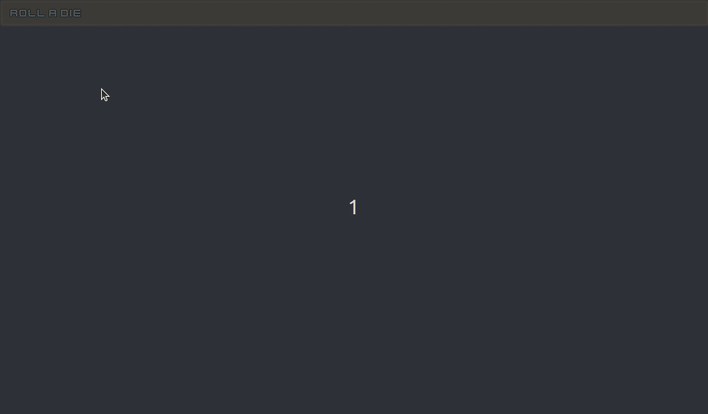
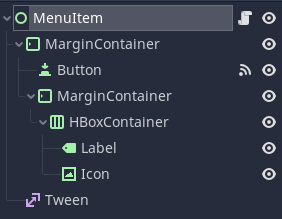
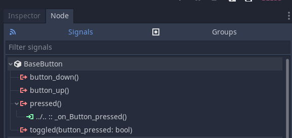
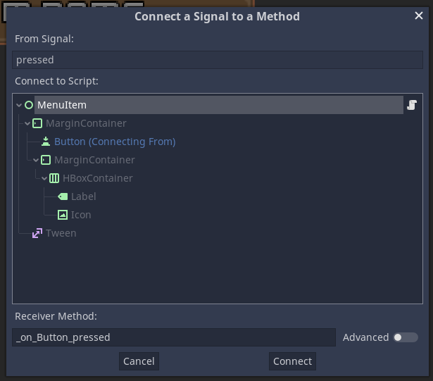
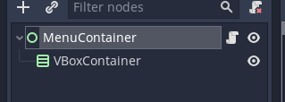
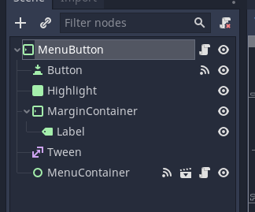
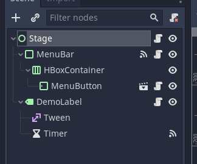

Godot 3 Tutorial: Drop-down Menu
Publish date: Apr 25, 2023Tags: godot3 tutorials
Godot provides a lot of tools out of the box, including a system for user interfaces, such as drop-down menus. After all, the Godot editor is built on just that technology an it has some of those UI elements. And those elements and the styling options work fine for something that looks like a UI-heavy application, as is the case with the Godot editor. However, sometimes we want something a bit more flashy for a game. Or maybe just something that’s a bit more customizable.
Therefore, I want to guide you through building a custom drop-down menu in this tutorial. It will have custom buttons with colored symbols, all of which will be defined by resources. The whole system will have a centralized way of emitting signals, meaning other nodes listening for menu clicks only need to connect to a single node. And while we’re at it I will try to add some juice.

Hopefully this tutorial can serve as a starting point for you to build your own custom user interfaces in Godot. I will do my best to show it in what I believe is a clean way. And there is one technique I’m eager to show you. A trick that allows you to combine the automatic UI scaling of containers with precise parametric positioning via code. But I will get to that. Let us go over it from the start.
Setup
All code and files for this tutorial will be available on my GitHub again (https://github.com/SelinaDev/03_Drop_Down_Menus). If you want to follow along, start with a fresh Godot project, with two folders: assets and src. We’ll use a few of Kenney’s assets, which we’ll put into assets subfolders:
- A Font folder with “Kenney Future.tff” from Kenney Fonts.
- An Icons folder with the following icons from Board Game Icons:
- “d4_outline_number.png”
- “d6_outline_number.png”
- “d8_outline_number.png”
- “d10_outline_number.png”
- “d12_outline_number.png”
- “d20_outline_number.png”
- A UI folder with two button textures from UI Pack: RPG Expansion:
- “buttonLong_brown_pressed.png”
- “buttonSquare_brown_pressed.png”
Menu structue
Before we can start populating this menu bar with menu buttons which will spawn drop-down menus, we first have to create all of those elements. I have not found a good way to separate all these elements. It would probably be more fun to test each new feature out on its own as we implement them. However, as the parent nodes need to handle child nodes I would have to split up each node’s code a lot, which I fear would be confusing. So in order to keep this tutorial concise I will explain the nodes we will create here, and then show the implementation from the outermost nodes to the innermost.
The innermost node we need to create is the MenuButton. It sits in the menu bar we have just created. When clicked, it will spawn a drop-down menu. This drop-down menu consists of several components, which are grouped together by a MenuContainer. This menu container in turn holds the MenuItems, the individual buttons of the drop-down menu. So let us start implementing the latter one.
Menu Items
We will start with what I will call MenuItem (I will be the first to admit that my nomenclature is not the cleanest, but I hope you will be able to follow anyway). The menu items are the items in the drop-down menu that will pop up. If you think of our menu strucutre as a tree, then they are the leaf nodes (at least here, as the system could be extended to submenus). Let us start by creating a new scene with a Control node at its rook, which we will call, unsurprisingly, MenuItem. Save the scene in a new folder under res://src/UI_Elements/MenuItem.tscn. Now for the scene tree structure: We add a MarginContaineras a child of MenuItem. To that we add two nodes, a Button and another MarginContainer. We then add a HBoxContainer to the inner MarginContainer. In that HBoxcontainer we add a Label node and a TextureRect node, the latter of which we will call Icon. We add one last child to the root MenuItem, and if you’ve read my other tutorials you will not be surprised to learn that we now add a Tween.

Now for the nodes’ setup. For the Icon we tick its Expand property. We set Mouse > Filter to Ignore. And in the Size Flags we untick the horizontal Fill, and instead set it to Expand and Shrink End. This will cause the Icon to be pushed to the far right of the available space. That way it currently has zero width, but we will deal with that in code later.
Set the Label’s text to “Item Name” as a placeholder for now. Set its V Align to Center. In the Size Flags check Fill both for Horizontal and Vertical. Lastly, go to Theme Overrides > Fonts and create a new DynamicFont in the Font slot. Set that font’s outline Outline Size to 1 and its Outline Color to black. Drag res://assets/Font/Kenney Future.ttf into Font > Font Data.
For both the HBoxContainer and the inner MarginContainer we set Mouse > Filter to Ignore as well. We also configure the inner MarginContainer’s Margin Right and Margin Left under Theme Overrides > Constants to be 5 pixels.
The Button will catch input events, so we leave its filters as they are. We only need give it some custom Styles under Theme Overrides > Styles. Create a new StyleBoxTexture in the Normal, and drag in “buttonLong_brown_pressed.png” as Texture. We set all the Margins to 8, and change the Horizontal Axis Strech to Tile and the Vertical one to Tile Fit. Once we configered the StyleBox for Normal we simply copy by dragging it from Normal and dropping it into the all of the other slots one by one.
Lastly, on the MenuItem we have to check Rect > Clip Content. All the positioning will come later. As you will see this setup, as unconventional as it may seem right now, will give us quite a bit of flexibility.
Now for some code. Let us add a script to MenuItem and call it MenuItem.gd. We save it alongside MenuItem.tscn. Let us look at the top of the script first, then go over the individual functions.
class_name MenuItem
extends Control
signal pressed
const fade_duration: float = 0.15
export (Color) var highlight_color
onready var label: Label = $MarginContainer/MarginContainer/HBoxContainer/Label
onready var icon: TextureRect = $MarginContainer/MarginContainer/HBoxContainer/Icon
onready var margin_container: MarginContainer = $MarginContainer
onready var button: Button = $MarginContainer/Button
onready var tween: Tween = $Tween
Here, we define a pressed signal, so we can have the scene behave like a button. We export a highlight_color, so we can set it in the editor, and define a constant value for how long the fade to and from that highlight should take. Lastly, we cache all the nodes we need access to later.
func _ready() -> void:
rect_min_size.x = margin_container.rect_size.x
icon.rect_min_size.x = icon.rect_size.y
It is relatively compact, but it is important for positioning. We will later add this scene to a container, which will try to compress its dimensions as far as it can, which is why we did not care for the size of the MenuItem root node itself. In order to preserve what we see in the scene, which is dependent on the width of the (outer) MarginContainer, we set this nodes minimum width to that of the MarginContainer. We don’t set the height yet, meaning it will be squished to 0, and due to the content clipping the node will be invisible. This is actually just what we want for the animation, but more on that later.
We also want the Icon to be square, so we set the minimum x dimension to the current y. This will ensure that even if squished vertically, it won’t go below a width that is equal to its height, making it square.
func setup(text: String, icon_texture: Texture, icon_color: Color) -> void:
label.text = text
icon.texture = icon_texture
icon.modulate = icon_color
Here is our setup function. This is something I like to have for UI nodes that get instanced in code. All the things you would have as exports if you’d do this in the editor are set via this function. Everything that will vary from one instance of this scene to the next, i.e., the text, icon and icon color, are set in this function. Notice that the trick using the modulate to color the icons will only work properly for white icons.
For the next block we will connect a signal from the Button to this script. Select the Button, and click on Node next to the Inspector. Make sure you are in the Signals tab rather than the Groups tab.

Double click on the pressed() signal, then clich Connect in the window that pops up.

This will create the function in the script for you, which we will fill with the following code:
func _on_Button_pressed() -> void:
emit_signal("pressed")
Here we simply emit this scene’s pressed() signal whenever we receive it from the Button effectively relaying it. The Button will catch all mouse clicks and screen taps, and now our scene will too, but with some added functionality.
Speaking of buttons, you might have noticed that I have not used an alternative texture for the Button’s Hover state. Sometimes you don’t have alternative textures available, so I wanted to show a nice trick to achieve a hover effect procedurally.
func _highlight(fade_in) -> void:
tween.remove(button, "self_modulate")
var start: Color = highlight_color if not fade_in else Color.white
var target: Color = highlight_color if fade_in else Color.white
var duration := fade_duration * inverse_lerp(target.r, start.r, button.self_modulate.r)
tween.interpolate_property(
button,
"self_modulate",
button.self_modulate,
target,
duration
)
tween.start()
This is the function that does the highlighting. We will highlight by changing the modulate of the Button (i.e., the background of this scene) between neutral (i.e., white) and the highlight color we still have to define. But more on that later. First, we remove any ongoing tweenings of self_modulate from our Tween node. We will combine different kinds of animations later, so we have to be specific in what we want to remove. You will have noticed that this function is taking an argument fade_in. This argument tells us whether we are using this function to fade the highlight in or out. For that reason we will also define a start and target. These will evaluate either to the highlight_color or to a neutral Color.white, depending on which way we are going. We also calculate a duration. We have already defined how long a complete fade should take, but what if the user is quick and moves away from the MenuItem before the fade in of the highlight is complete. We do not want to wait for the first fade to complete, and we also do not want to jump straight to the full highlight for the start of the fade out. So we calculate how close we already are to our target modulate and scale our duration according to that. This makes things a lot smoother.
You can see somethin similar in the interpolate_property(). We do not start the tween at the start value. That is only a hypothetical value for a full animation in a certain direction. Rather, we start at the current modulate, and animate to the target, for the calculated duration. We omit the easing parameters to stay on a linear interpolation. That’s the downside of accounting for these partial animations. They could get wonky if we use non-linear easings that always start at different points and have different durations.
At this point we have to step out of the code again and head over to the Button’s signals once again. This time we double click on mouse_entered(). We will not leave the receiver method at its default, however, but set it to "_highlight". We remember that _highlight() takes in an argument, which we need to account for. For this reason we activate the advanced setting. Let us add a bool argument to the call. Once it appears under Bind we make sure the checkbox is ticked, so fade_in is true when the function gets called in reaction to the mouse entering. Once all that is set up, we click Connect.

We also connect mouse_exited() in the same way, so with "_highlight" as receiver method and an extra bool argument, just this time we make sure the checkbox is not ticked. This setup will call _highlight() to fade in when the mouse is entered, and to fade out when it exits, without need for extra code.
Lastly, the MenuItems themselves will handle opening and closing of the drop-down menu, so we need functions for that. Let us first look at the code, and then I will go into a bit of detail of what will be happening, which will hopefully make my choice for this kind of node setup a bit more clear.
func open() -> void:
button.self_modulate = Color.white
var duration := fade_duration * inverse_lerp(0, margin_container.rect_size.y, rect_min_size.y)
tween.remove(self, "rect_min_size:y")
tween.interpolate_property(
self,
"rect_min_size:y",
rect_min_size.y,
margin_container.rect_size.y,
duration
)
tween.start()
func close() -> void:
var duration := fade_duration * inverse_lerp(margin_container.rect_size.y, 0, rect_min_size.y)
tween.remove(self, "rect_min_size:y")
tween.interpolate_property(
self,
"rect_min_size:y",
rect_min_size.y,
0,
duration
)
tween.start()
These are both pretty similar, and mostly differ in the direction they work. Indeed, we could use a similar trick like with the _highlight() function. However, these functions will get called from other nodes, and in that case I prefer to be a bit more explicit. The _open() funcition has one extra line at the start, which resets the Button’s self_modulate. This is necessary as we won’t reliably get mouse_exited signal when the menu closes, and we don’t want the MenuItems to remain highlighted when it is opened again.
After that the two functions only differ in their direction. What we want to animate is the y coordinate of the MenuItem’s rect_min_size property. I’ll explain why below. We have two lines that look familiar to how we did things in the _highlight() function. We calculate the actual animation duration from the point we are at the moment. If the menu is fully opened or closed, then duration will be the full fade_duration. If we rapidly open and close the menu before the previous animation completed, we’ll use less time. For this case we also remove any previous tweenings of our target property. Then it’s setting up the tween. In the closed state we want rect_min_size.y to be 0, and in the opened state we want it to the height of its child node, the MarginContainer’s rect_size.y. We always start from the current height and animate to the target height. And just like that, individual **MenuItem*s are theoreticall able to open and close. Next, we will need a container to group our them.
VBoxContainer, which will group them vertically. Containers will try to scale their children. If their anchors and size are configured to a certain size they might want to stretch their children, but most of the time they try to compress their children to the minimum required size. If that child is a container a well, then this will work recursively. That’s how you can build nice UIs in Godot with nesting Containers. That’s why we set the MenuItem’s minimum width in its setup() function. We don’t want it compressed below that width. However, we use the minimum size to animate opening and closing. But aren’t we working with containers, and shouldn’t that prevent us from compressing the MenuItem below the minimum height of all it’s components? Well, we use containers, yes, but we are consciously breaking that hierarchy of containers with a plain Control as the MenuItem’s root. A Control won’t manage it’s children’s size the same way a container would. With clipping enabled it will only show the part of its child that’s inside its own extents. Therefore, by animating the minimum height of the root Control we can change how much we show of the full MenuItem, from not showing it (closed) to showing all of it (opened).
MenuItemConfig
Before we start with the container for the MenuItems we need something to hold configuration data for them. We create a custom resource that holds all the information we set in the MenuItem’s setup() function, plus a button_id.
class_name MenuItemConfig
extends Resource
export (String) var text
export (String) var button_id
export (Texture) var icon
export (Color) var icon_color = Color.white
Menu Containers
Now we create a container for the menu. This container will basically be a VBoxContainer wrapped inside a Control with some code attached. So create a new scene with a Control node as root, and call it MenuContainer. Save it under res://src/UI_Elements/MenuContainer.tscn. Add a VBoxContainer as a child node.

Attach a script to the root node. We’ll save the script as res://src/UI_Elements/MenuContainer.gd. Here’s the top of the script:
class_name MenuContainer
extends Control
signal button_pressed(button_id)
const menu_item_scene: PackedScene = preload("res://src/UI_Elements/MenuItem.tscn")
onready var v_box: VBoxContainer = $VBoxContainer
func _ready() -> void:
hide()
We define a button_pressed signal that relays button presses from the contained MenuItems and attaches their id. We also load the MenuItem scene into a variable so we can instantiate it later. We need a reference to the VBoxContainer so we can fill it with the MenuItems. In the ready function we simply make sure the container starts out invisible.
func fill(menu_items: Array) -> void:
for menu_item_config in menu_items:
create_button(menu_item_config)
func create_button(menu_item_config: MenuItemConfig) -> void:
var new_menu_item: MenuItem = menu_item_scene.instance()
v_box.add_child(new_menu_item)
new_menu_item.connect("pressed", self, "_on_MenuItem_pressed", [menu_item_config.button_id])
new_menu_item.setup(menu_item_config.text, menu_item_config.icon, menu_item_config.icon_color)
Next come two functions to populate the container. The fill() function expects an array of MenuItemConfig resources and uses the create_button() function to create one item from each config. The create_button() function instantiates our MenuItem scene and adds it to the VBoxContainer. It then connects the MenuItem’s pressed signal so a _on_MenuItem_pressed() function and binds the button_id to that signal, so we later know which button was pressed. Lastly we call the setup() function we wrote on the MenuItem and feed it with the info it needs.
func _on_MenuItem_pressed(button_id: String) -> void:
emit_signal("button_pressed", button_id)
The function we connect to simply emits the button_pressed signal with the associated button_id whenever a MenuItem is pressed.
func set_menu_position(global_position: Vector2) -> void:
v_box.rect_global_position = global_position
Next we have a wrapper to set the global position.
func has_position(global_position: Vector2) -> bool:
return v_box.get_global_rect().has_point(global_position)
We later will need a way of knowing if an input event was inside the menu, for which we will use this function.
func open() -> void:
show()
for item in v_box.get_children():
item.open()
func close() -> void:
var items = v_box.get_children()
for item in items:
item.close()
yield(get_tree().create_timer(MenuItem.fade_duration), "timeout")
hide()
To open the whole menu we simply show it and then open every individual item. Closing works similarly, only we need to hide once the animation is complete, so we delay hiding by the MenuItem’s fade_duration. Not the most elegant solution here, but it works. And with that we’re done with the MenuContainer. We need only two more pieces for the system itself, and after that we will put the system to use.
MenuButton
The menus we created so far will be attached to a button that opens it. For this we create a new scene with a MarginContainer as a root node and call it MenuButton. Save it in the same directory as the other scenes, under res://src/UI_Elements/MenuButton.tscn. Now for the node structure. The first child will be a Button. In a previous version I was using input events to check for mouse clicks. However, this method gets a bit more convoluted when you also want to check for touch events. Button nodes already check for everything we need, so there’s not need to reinvent the wheel. We’ll also want to highlight this element, but here I wanted to show a slightly different method. We will use a Panel node as background for our Label. So add a Panel and rename it to Highlight. Then add a MarginContainer and to that add a Label. The MenuButton needs two more nodes. One Tween and an instance of our MenuContainer scene.

MarginContainers? The obvious use of them is to add padding to some elements so they get the space they need, like we do here with the Label. Don’t be afraid to give your elements some space to breathe. However, the way MarginContainers position their children is that they take all children and strech them to their own size minus the margin settings. In some cases I simply want to make use of container positioning and make sure a few node are all the same size, like the Highlight Panel and the Button in this example. For this I find it most convenient to simply use a MarginContainer with all margins set to 0, as this will do exactly this job.
A lot of nodes in this scene, so let’s get to configuring them. I want this element to just be text, so we need the Button’s functionality, but not its visual background. For this, go into the Button’s Theme Overrides > Styles and create a new StyleBoxEmpty in the first slot. Then drag and drop it from the first into all the other slots. Next, for the Highlight set Mouse > Filter to Ignore. Then, let’s create a new StyleBoxFlat in Theme Overrides > Styles > Panel. For the BG Color white that’s halfway transparent, i.e., with an alpha of arount 128. We also want borderst. Set Border Width to 2 for all borders. Set the Boder > Color to a solid white. Lastly, set all the corners in Corner Radius to 5. Moving on to the MarginContainer we again set Mouse > Filter to Ignore. We then set the margins under Theme Overrides > Constants to 5, 3, 7, and 3 (for right, top, left, and bottom respectively). For the Label we set the V Align to Center, and check Fill in the Size Flags for both Horizontal and Vertical. As with the other labels before we create a new Dynamic Font in Theme Overrides > Fonts > Font. Again we fill res://assets/Font/Kenney Future.ttf into Font > _ Font Data_ and give the font an Outline Size of 1 and a black Outline Color. I probably should have created a font resource for this, but how else should you learn from my mistakes.
Now, let’s start with the code. Create a script on the root MenuButton code, and save it at res://src/UI_Elements/MenuButton.gd. Here’s the top part of the script.
tool
extends MarginContainer
signal button_pressed(menu, button)
const fade_duration: float = 0.8
export var text: String = "<Button>" setget set_text
export var menu_id: String
export (Array, Resource) var menu_options
onready var highlight: Panel = $Highlight
onready var label: Label = $MarginContainer/Label
onready var tween: Tween = $Tween
onready var menu_container: MenuContainer = $MenuContainer
var spawn_y: float
var _is_open: bool = false
Here we create a tool script. We want to see the text in the editor, so we need it to be able to update within the editor. Also note that we are not setting a class_name. This is because on the one hand we won’t be referring to this class in code, and on the other hand MenuButton is already a builtin type, so we wouldn’t be able to overload it. Next you’ll see a continuation of the system that relays our signals, with a button_pressed() signal that will relay both the MenuItem that was clicked as well as the MenuButton it belongs to (I do realize that button_pressed is a bit of a misnomer when the signal is reall concerned about MenuItems, but I created it early on and changing it would require changes in a lot of different places, so that’s how it’s called now). We again have a fade_duration constant, again for the highlight animation. We export three variables. The text we’ll use for our label (which also has an associated setter function set_text()), a menu_id that’ll be emitted so we’ll know which item in which menu was pressed, and an Array of Resources called menu_options. We will fill this array with MenuItemConfig Resources, and it will define what items are in the menu. We also get references to a few nodes. Lastly, we have a _is_open variable that stores whether the menu is open or closed, as well as a spawn_y variable that we’ll use to position the menu (we’ll get to where we set that variable later).
func _ready() -> void:
set_text(text)
highlight.modulate.a = 0
menu_container.fill(menu_options)
Next up is the _ready() function. We call the set_text() function once (we’ll write it in a bit). We also make the Highlight Panel transparent, because the button should start out not highlighted. Lastly, we pass the array of MenuItemConfigs to the MenuContainer’s fill() function to populate it.
func set_text(value: String) -> void:
text = value
if not is_inside_tree():
yield(self, "ready")
label.text = text
Now for the aforementioned set_text() function. We set the text variable itself to the new value. Then, in case we aren’t inside the scene tree, we wait for that, so we have access to the label. Once we are sure we can access the label, we set its text as well. This makes sure the scene will work properly in the editor as well.
func fade(fade_in: bool) -> void:
tween.remove_all()
var target := float(fade_in)
var duration := fade_duration * inverse_lerp(target, 1.0 - target, highlight.modulate.a)
tween.interpolate_property(
highlight,
"modulate:a",
highlight.modulate.a,
1 if fade_in else 0,
duration
)
tween.start()
Now we’ll handle the fade() function. This function is almost identical to the MenuItem’s _highlight() function, except that we animate the alpha value of the Highlight node, thereby animating it between transparent and opague (furthermore this function is evidence that I really need to work on more consistent naming).
func spawn_menu() -> void:
var menu_pos := Vector2(rect_global_position.x, spawn_y)
menu_container.set_menu_position(menu_pos)
menu_container.open()
_is_open = true
Here we spawn the menu. We first calculate it’s position. In this example the position will be static, but if there is chance the MenuButton could move this makes sure the menu will always be right below it. The (global) x coordinates of the MenuButton and the MenuContainer should be identical, and the (global) y should be just below the MenuButton, which is stored in spawn_y. Once that’s taken care of we call open() on the **MenuContainer` and keep track of that state by saving it in _is_open.
func _on_Button_pressed() -> void:
if _is_open:
menu_container.close()
_is_open = false
else:
spawn_menu()
We need a function we can later hook up to the Button’s pressed() signal. The button should work differently depending on whether the menu currently is open or closed. If it is open we close it (and store that state). If it is not, we call spawn_menu(), which will open the menu for us.
func has_position(global_position: Vector2) -> bool:
if get_global_rect().has_point(global_position):
return true
return menu_container.has_position(global_position)
We will want the menu to close when we click outside the button or the menu. For this we’ll need a function that checks if an event is inside the button or its child menu. We already have a has_position() function on the MenuContainer. First we check whether the event is in the button. If it is, we return true, if it isn’t we check with the MenuContainer if the event happened in its rectangle.
func _input(event: InputEvent) -> void:
if (not event.is_echo()
and event.get("position") != null
and event.get("pressed") == true
and not has_position(event.get("position"))):
menu_container.close()
_is_open = false
Here we check any input that occurred, and filter for the ones that interest us. We check if the event isn’t an echo, as we don’t want to react to continued presses. Then we check if the event has a position property by using get(), and if the event has that property the value will not be null. Then we check if the pressed property is true. This works similar to the check above, so if the event does not have a pressed property, this check will be false. Then we check whether the position is outside the button or the menu. Then if all these checks are satisfied we close the menu (and store that state).
func _on_MenuContainer_button_pressed(button_id) -> void:
emit_signal("button_pressed", menu_id, button_id)
menu_container.close()
_is_open = false
As the last function we have the function that will relay the signal from the menu. Also, when a button in the menu is clicked we close it.
What’s left now is to connect all the signals. We need to connect the button_pressed() signal of the MenuContainer to \_on_MenuContainer_button_pressed(), as well as the pressed() signal of the Button to \_on_Button_pressed(). We also need to connect the mouse_entered() signal on the Button to the MenuButton’s fade() function, and bind a true boolean argument to it, same as we did above with the highlight() above in the MenuItem. We connect the mouse_exited() signal of the Button to the MenuButton’s fade() as well, but this time bind false as argument.
We only need one further piece to the puzzle, which is a place to put one or more MenuButtons. I won’t create a whole scene for that. Instead it will be part of a test stage that I will use to demonstrate the functionality. That test scene will have a menu bar at the top with one MenuButton which we will label “Roll a Die”. Once clicked it will show the menu, which we will populate with options for different dice. To make the example complete we will actuall roll that dice and display the result. So let’s get to creating our test stage.
Test Stage
Create a new scene with a Control root and call that node Stage. Save the scene under res://src/Stage.tscn. Now we add a PanelContainer and call it MenuBar. Add an HBoxContainer as a child of that. Add an instance of the MenuButton to the HBoxContainer. Now add a Label as a second child of the Stage node, and call it DemoLabel. Add a Tween and a Timer as children of the DemoLabel.

Now for configuring everything. For the Stage set the Layout to Full Rect (in the main panel). Set the MenuBar Layout to Top Wide. Also in the Theme Overrides, Styles create a new ‘StyleBoxTexture’ in the Panel property. Add res://assets/UI/buttonSquare_brown_pressed.png as its Texture Then, set all the _Margin_s to 7. Moving on to the DemoLabel we set the Layout to Full Rect, and then set both Align and V Align to Center. Under Theme Overrides > Fonts we create a new ‘DynamicFont’ resource for the Font. Set its Size to 65, its Outline to 2, and its Outline Color to black. Then drag res://assets/Font/Kenney Future.ttf into the Font Data slot. Lastly, we set the Timer’s Wait Time to 2, and check the One Shot property.
Now we can move our attention to configuring the MenuButton. Set its Text to “Roll a Die”, and its Menu ID to “dice”. Click on the Menu Options and increase its Size to 6. Now we have six empty slots, numbered 0 to 5. Click into the 0 slot and find and click “New MenuItemConfig”. Configure this MenuItemConfig by setting its Text to “Roll a D4”, the Button ID to “d4”, and by dragging res://assets/Icons/d4_outline_number.png into the Icon slot. Lastly, choose a color you like for Icon Color (preferrably something that contrasts the brown button backgrounds we use). For the other 6 dice you can drag the resource we just created into the other slots in the array. Then, before you modify them right click each resource, scroll down all the way to the bottom and click Make Unique. By default the resources would be the same, i.e., their data would be linked. By making them unique we effectively create copies we can independently edit, which is what we do next. Go through all of them, and edit the Text, Button ID, and Icon to reflect our different dice. After the d4, we want a d6, then a d8, a d10, a d12, and finally a d20. You can change the colors to something you like. Now that everything is set up as we need it, we will move to the code.
I’ll start with the code of out text display, so you know what we’ll be showing. Add a script to DemoLabel, and save it under res://src/TestLabel.gd. Let’s look at the top of the script.
extends Label
const fade_duration: float = 1.0
onready var tween: Tween = $Tween
onready var timer: Timer = $Timer
var rng := RandomNumberGenerator.new()
func _ready() -> void:
modulate = Color.transparent
rng.randomize()
As we’ve done a few time now, we first set a fade_duration. We also need access to both the Timer and the Tween child nodes, so we reference them as onready variables. As this display will show dice rolls, we need a random number generator, which we call rng. Then in the _ready() function we make the node initially invisible by setting its modulate to be transparent, and also we randomize our RandomNumberGenerator. Next up is the function the displays the results.
func show_result(die: String) -> void:
var dice_number := int(die.substr(1))
var result = rng.randi_range(1, dice_number)
text = "Rolled a %s\nRusult: %d" % [die, result]
tween.remove_all()
tween.interpolate_property(
self,
"modulate:a",
modulate.a,
1,
fade_duration * (1-modulate.a)
)
tween.start()
timer.start()
This is a bit hacky, but it works for the purpose of this tutorial. Remember how we’ve set all the _Button ID_s to “d4”, “d6” and so on previously? That ID is what will be passed into this function. In the first line we extract the number of sides of the die. We do this by first extracting a substring. die.substring(1) will give us a substring starting from index 1, i.e., the second letter, directly after the initial d all the way to the end. We wrap this in a call to ìnt()`, which will convert it to the number we want. Next we let the rng generate a result which is drawn from a uniform distribution ranging from 1 to the number of sides on the die. We then generate a string detailing what die was rolled and what the result was. The rest of the function which fades in the text from transparent to opaque shoudl be familar by now. We close the function by starting the timer which will trigger the fade out.
We need one more function which will trigger said fade out from the timeout() signal of the Timer node. So from the Timer node connect this signal to a _on_Timer_timeout method on the DemoLabel. We will the created function with the following.
func _on_Timer_timeout() -> void:
tween.interpolate_property(
self,
"modulate:a",
1,
0,
fade_duration
)
tween.start()
So two seconds after the Timer times out, we fade the DemoLabel to transparent again. The neat thing of doing it this way is that even if we are quick and trigger the show_result() method multiple times, that method will simply reset the Timer, meaning the label will only fade out two seconds after the last show_result().
Now let us move on to the MenuBar, which is actually the last missing piece of the puzzle for our system.
extends PanelContainer
signal button_pressed(menu, button)
onready var h_box: HBoxContainer = $HBoxContainer
extends PanelContainer
signal button_pressed(menu, button)
onready var h_box: HBoxContainer = $HBoxContainer
func _ready() -> void:
var spawn_y: float = rect_global_position.y + rect_size.y
for menu_button in h_box.get_children():
menu_button.spawn_y = spawn_y
menu_button.connect("button_pressed", self, "_on_MenuButton_button_pressed")
func _on_MenuButton_button_pressed(menu: String, button: String) -> void:
emit_signal("button_pressed", menu, button)
This is pretty straight forward. The most interesting thing to point out here is how we get the lower bound of the MenuBar itself and use it as the spawn_y variable we introduced earlier. The MenuBar acts as a root for multiple MenuButton menus (even though in this demo we only use one). To manage them automatically it iterates over all the children of the HBoxContainer, sets their spawn_y and connects them to _on_MenuButton_button_pressed(). This mentioned function simply relays the signal and thereby bundles it. We can have multiple menus with multiple items each and we will only need to listen to the MenuBar’s button_pressed() signal to handle all these events. Note here that iterating in this way could be made safer. My intent is that the MenuBar (or more specifically its HBoxContainer child) will only be filled with MenuButton nodes. If you intend to mix and match here, then please make sure you check that what you’re iterating over actually is a MenuButton.
We now need to connect the menu and the label. Intuitively you’d thing we could just connect button_pressed() signal from the MenuBar to the DemoLabel’s show_result() function. However, the arguments we have set up for that signal does not match the expected arguments of that function. So we’ll choose a different route. Add a new script to the Stage root node and save it as res://src/Stage.gd. Add the following code.
extends Control
onready var demo_label: Label = $DemoLabel
func _on_MenuBar_button_pressed(_menu, button) -> void:
demo_label.show_result(button)
This function wraps the function call how we need it. I also don’t believe this is superflous, because once we have multiple menus we might also want to do the filtering here to make sure the button-press came from the right menu. All that’s left to do is to connect the button_pressed() signal from the MenuBar to the _on_MenuBar_button_pressed() function on the Stage node via the editor. Once you have done that you can run the scene and look at the result.
Running the Project
In the running project you can hover over the button and click it, which will cause the menu to appear. You can quickly move the mouse over the menu items and see how their highlight reacts. If you click outside the menu it will close. And finally if you click on one of the menu entries you can see a message with the result of the dice throw appearing.
Conclusion
This was a slightly longer tutorial. I hope you could follow it. If there have been problems at any point, and your project is not doing what it should, check out my complete project in its GitHub repository. https://github.com/SelinaDev/03_Drop_Down_Menus.
I hope I got the most important points across here, which is how to combine Container and non-Container Control nodes by breaking the nesting of Containers and manuall/procedually adjusting their position. I believe this is a very important trick for making interesting and slightly more complex UIs in Godot.
If you notice and bugs or mistakes, either in the code or here in the text, feel free to contact me. You can find me on Twitter as @SelinaDev (and probably soon on Mastodon).